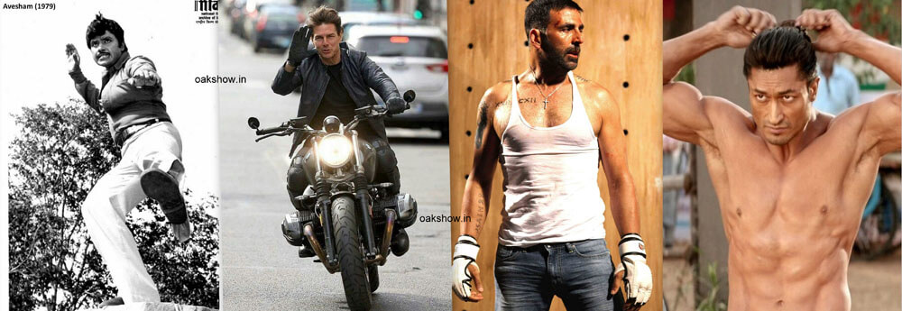

Khuda Haafiz Review: You Can Watch it Without a Second Thought

Posted By : Jithin J Prasad | Date : 15-08-2020
Following The late actor Jayan and Khilladi Akshay Kumar Vidyut Jammwal with no doubt is the biggest action star in Indian cinema, his previous films will prove the same, and we certainly will be expecting Vidyut to kick some ass in his martial artist style, right? Well, not in this one. With this film, he showed us that he's far better than the actor(s) with some vague stage name rhyming with some big cat. Well, he already proved that in action but now it's his acting which is amazing.

There are alot of pros and cons in this film,
The pros such as;
- Realestic Fight Scenes:The fight scenes by Vidyut are undoubtedly realistic because just like Tom Cruise he won't use a stunt double, but in this one, he is playing the role of a regular guy, so here he's not using his martial arts moves, yeah that's right this is not a high voltage action flick.
- Good acting:The cast includes Annu Kapoor, he like his previous films did it with ease, and special mention again goes to Mr. Vidyut Jammwal, he managed to get out of the action hero mask with this one.Nargis Choudhary played by Shivaleeka Oberoi is well compared to the other leads, just ok, but not so bad either.
- The Cinematography and Edits:Although it's not having a Hollywood kind of making like Vishwaroopam , the locations and some of the special effects can be compared to that of Vishwaroopam.
Now The Cons:
- Few Plot holes: Yeah, that's right.But the few plot holes that this film have can be ignored, after all End Game's got a lot of that too.
- A little Cliche Sometimes: As I said before, we can ignore this too.
Sometimes we could find the story similar to that of Liam Neeson's Taken but we can nevr say that this film is a copycat version of Taken but instead some parts could have been inspired by the same.
You can go for Khuda Haafiz without a second thought, because it will not dissapoint you.
To check out the film visit Khuda Haafiz
Watch the Trailer Here